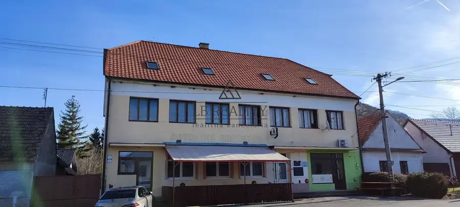
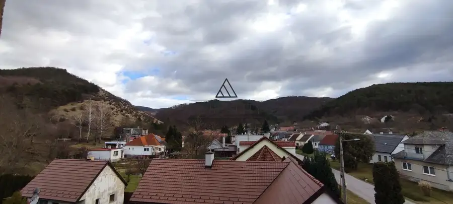
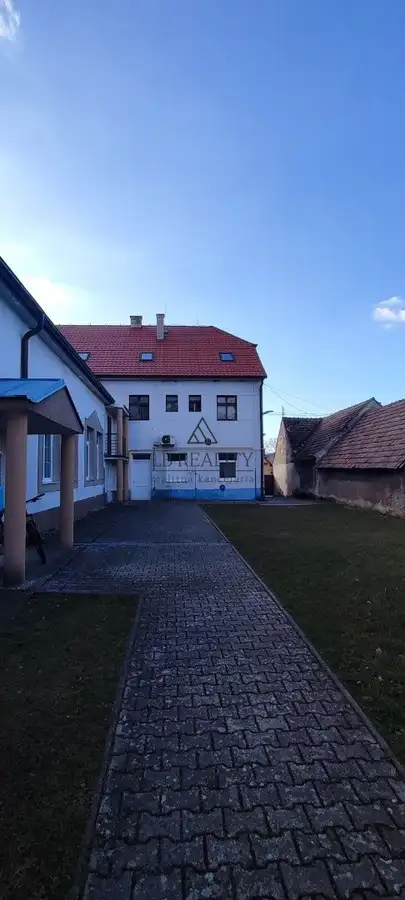
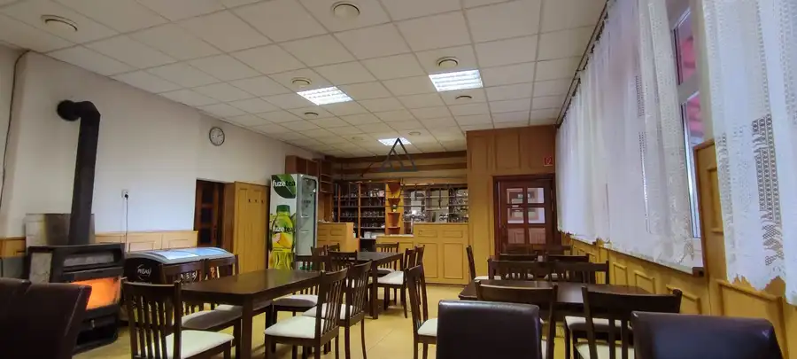
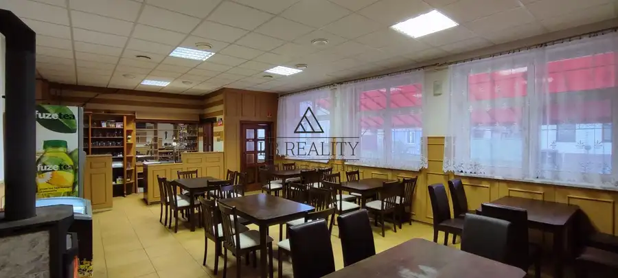

NA PREDAJ budova obchodu a služieb, Plavecký Mikuláš, okres MALACKY. Výborná poloha v CENTRE OBCE.
Plavecký Mikuláš






- Plocha468 m²
- StavČiastočná rekonštrukcia
- VlastníctvoOsobné
O nehnuteľnosti
Budova s atraktívnou polohou sa nachádza v obci Plavecký Mikuláš, ktorá je známou turistickou lokalitou vďaka blízkosti nádhernej prírody Malých Karpát. Prístup k objektu je cez obecnú asfaltovú komunikáciu. Objekt má celkovo 2 podlažia + podkrovie + pivničné priestory v suteréne. K budove prislúcha pozemok v uzavretom dvore o rozlohe 382 m2. PLOCHA: Zastavaná plocha budovy + spevnené plochy: 242 m2 Plocha pozemku celkom: 382 m2 Plocha podlaží - 1 NP: 156 , 2. NP 156 m2, pivnica 51,84 m2.VÝHODY PONUKY: - VYNIKAJÚCA LOKALITA V CENTRE OBCE - OBEC PATRÍ K VYHĽADÁVANÝM TURISTICKÝM ZÓNAM - OBJEKT S VEĽKÝM POTENCIÁLOM - MOŽNOSŤ ZMENY ÚČELU VYUŽITIA STAVBY - PLNE KLIMATIZOVANÉ PREVÁDZKY so SAMOSTATNÝMI VSTUPMI na 1NP - REKONŠTRUOVANÁ STRECHA - 1.NP po REKONŠTRUKCII - PIVNICA A PODROVIE - UZATVORENÝ DVOR S MOŽNOSŤOU PARKOVANIA TECHNICKÉ ÚDAJE: budova je postavená z pálenej tehly (45 cm), vonkajšia fasáda bola inovovaná poterom z Brizolitu. Priestory na prvom nadzemnom podlaží prešli kompletnou rekonštrukciou vrátane rozvodov a úpravy interiéru – plastové okná, omietky, podlahy, rekonštrukcia sociálneho zariadenia, kuchyne. 2. NP je v pôvodnom stave. Strecha budovy bola v roku 2010 rekonštruovaná – osadením novej plechovej škridlovej krytiny so zachovaním pôvodného zdravého krovu, v streche boli osadené strešné okná zn. FAKRO. Objekt je prístupný z dvoch strán - hlavné vchody sú od hlavnej ulice, zadný vchod je riešený z dvora. Každé poschodie má samostatný elektromer. Prízemie je plne klimatizované. Kúrenie v 1. NP zabezpečuje piecka v reštauračných priestoroch, prípadne klimatizácia. IS na pozemku: elektrika (380V), voda, žumpa (objem 13 m3), plyn. POPIS PODLAŽÍ: priestory v budove na prvom nadzemnom podlaží sú momentálne rozdelené na 3 prevádzky so samostatnými vstupmi: prevádzka reštaurácie s kuchyňou, 2 miestnosťami, terasou a sociálnym zariadením, cukráreň a nezariadená prevádzka pozostávajúca z jednej miestnosti. Druhé nadzemné podlažie má 7 miestností, ktoré boli v minulosti využívane ako bytové jednotky so sociálnym zariadením. V podzemnom podlaží sa nachádza pivničný priestor o rozlohe 51,84 m2. LOKALITA: objekt budovy má vynikajúcu polohu v centre obce Plavecký Mikuláš (neďaleko kostola) s výbornou dopravnou dostupnosťou, obec je vzdialená 26 km od Malaciek. Má dobrú dopravnú polohu aj vo vzťahu k diaľničnému systému Európy, Diaľnica D2 (E65), ktorá spája mesto Bratislava s Českou republikou sa nachádza 27 km západne od obce. Obec je obľúbenou turistickou a cyklistickou zónou vďaka blízkosti Malých Karpát, turistické atrakcie - prírodná rezervácia Kršlenica, jaskyňa Deravá skala, vrch Čierna skala. Priestory objektu momentálne nie sú v prevádzke. Cena budovy je určená aktuálnym znaleckým posudkom. KONTAKT: Katarína Blažeková – LB REALITY mobil: + 421 917 886 950 e-mail: katarina@lbreality.sk
Parametre
- Druh
- Iný objekt
- Dátum zverejnenia
- 15. 02. 2024
- Elektrina
- Na pozemku - 230 V
- Energetický certifikát budovy
- nie je
- Odpadové vody
- Na pozemku - Kanalizácia
- Plocha pozemku
- 382 m²
- Plyn
- Na pozemku
- Počet izieb / miestností
- 11
- Počet nadzemných podlaží
- 2
- Počet podzemných podlaží
- 1
- Prístupová komunikácia
- Asfaltová
- Rok kolaudácie
- 1949
- Rok poslednej rekonštrukcie
- 2014
- Rok výstavby
- 1949
- Stav nehnuteľnosti
- Čiastočná rekonštrukcia
- Typ
- Predaj
- Typ konštrukcie
- Tehlová
- Vlastníctvo
- Osobné
- Voda
- Na pozemku
- Vykurovanie
- Vykurovany, Klimatizacia
- Zastavaná plocha
- 242 m²
- Úžitková plocha
- 468 m²